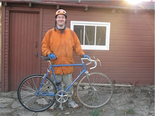

My old/new bike.
{kind=link}
I did something new today. A while ago, I had bought a 10-speed Bianchi for $30 at a garage sale, with the intention of converting it into a fixed-gear/single-speed bike to tootle around on. Well, today, I took it down to Bikechain, and talked to Steve, who sent me on a merry goose chase picking up various parts. Once I had gotten a new wheel, tire, and tube and biked back to Biekchain, Steve and I put it on the bike, checked the alignment of the cogs and chain, and then I had to head out to buy a new rear cog, and a lock wheel…
Sadly, my bike didn’t have a functional rear wheel anymore, so I had to walk down to Urbane Cyclist to buy the cog and lock. I ended up with a 52:19 ratio, which is harder to start on than the gear ratio I use to start, but isn’t too bad, and doesn’t go as fast as the gear ratio I use to go fast, but again isn’t too bad. Given those two things, I figure it’s pretty close to perfect for my style and level of riding. When I got the cog and lock ring back to  Bikechain, we put them on the new rear wheel, hooked everything up, ran into the obligatory problems, fixed them, and finally I was good to go, so I did! The first trip I took was a fairly short one, from U of T over to the Dark Horse Cafe at Queen and Spadina.
{kind=link}
The second trip was from Queen and Spadina back home, which was a little longer. I learned a few things from that trip, but let me start off with something I didn’t learn. I had test-ridden a fixed gear bike before, so I had already been almost bumped off by trying to coast, and this time around I was expecting it. So, now on to the things I did learn.
- Stopping is hard. It’s not that I can’t stop. I’ve got both brakes and pedals. The problem is stopping with one of the pedals in a decent position to start from when I want to start. The other problem is that I really want to coast when I come to the end of a stop, and that totally doesn’t work.
{kind=link}
-
I can carry it! (As you can see over on the right there.) My commuter bike is a good ride, and very solid, but damn is it ever heavy, especially after I loaded it up with accessories like a rear rack, and panniers, and water bottles. The fixie is simple, clean, and light enough to carry all over the place.
-
The fixie is slower than my commuter bike. Not just slower for the obvious reason (because I don’t have a higher gear to switch to), but it’s also slower for me to start, because I don’t have a lower gear to switch to. It’s really kind of strange, since one of the things I seem to be really good at is starting really quickly from a dead stop. Well, that used to be one of the things I was really good at. On the fixie, not so much.
-
Even though it’s slower I found that the fixie was a far smoother ride. Thinking about it a little more, perhaps because it’s slower. Since it takes me so much longer to stop and start, I found myself slowing down earlier to try and conserve as much momentum as I could.
-
All in all, I think that the new bike is going to be really good for me. It’ll slow me down, and calm me down, which are two things that I think I could use. I can also feel how it’s changing the way I ride, making it more smooth, controlled, and thoughtful; keeping my legs moving to give me more exercise and stop them from seizing up; teaching me how to lift my butt off the seat to go over speed bumps while continuing to pedal.
It’s fun. A lot of fun. I’m glad I finally got the conversion done, and I’m really looking forward to riding it.
Comments
Comments powered by Disqus